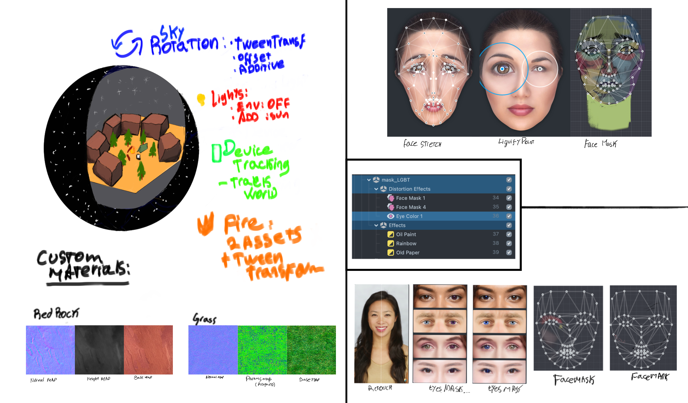

Let's Talk, Mindful Masculinity


I was selected as one of 15 scholars from more than 950 applicants for the 9-week Snap Lens Academy, an intensive program focused on developing ideas from concept to prototype using Snap's Lens Studio.
For our capstone project, I collaborated with two illustrators and led the AR development, 3D design, and Lens Studio scripting. Our project was presented company-wide and reached more than 200,000 views in its first week.
Prompted to explore themes around identity, our team focused on men’s mental health after research revealed how often emotional struggle goes unseen. We created an interactive face-tracking lens that surfaced facts and prompts to users, using eyebrow gestures as an input mechanic to advance through the experience.
The lens also included a spatial meditation environment designed as a grounding “campout” scene. Originally envisioned as part of a connected multi-user experience, we adapted the concept into a self-contained meditative interaction due to a one-week turnaround for the final build.